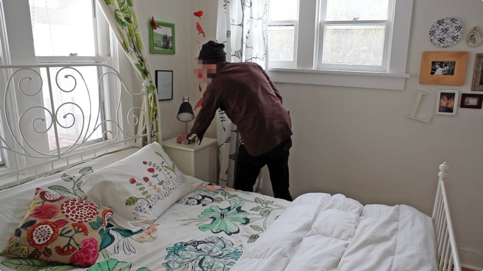
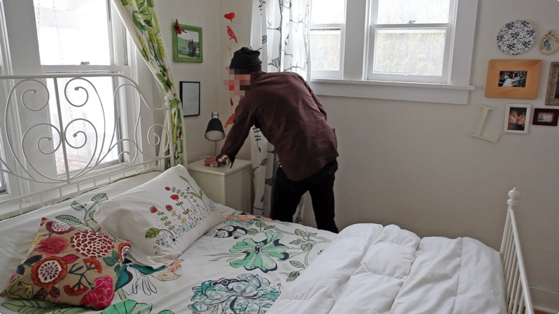

Conversnitch automatically tweets overheard conversations, bridging the gap between (presumed) private physical space and public space online.
A small "lightbulb" plugs into any standard fixture, and via a microphone and wifi connection audio is streamed to Amazon's Mechanical Turk, where it is transcribed by anonymous workers and posted to Twitter.
Conversnitch complicates the divisions between the physical and virtual, illegal and playful, human and machine, spoken and textual, eavesdropping and illumination.